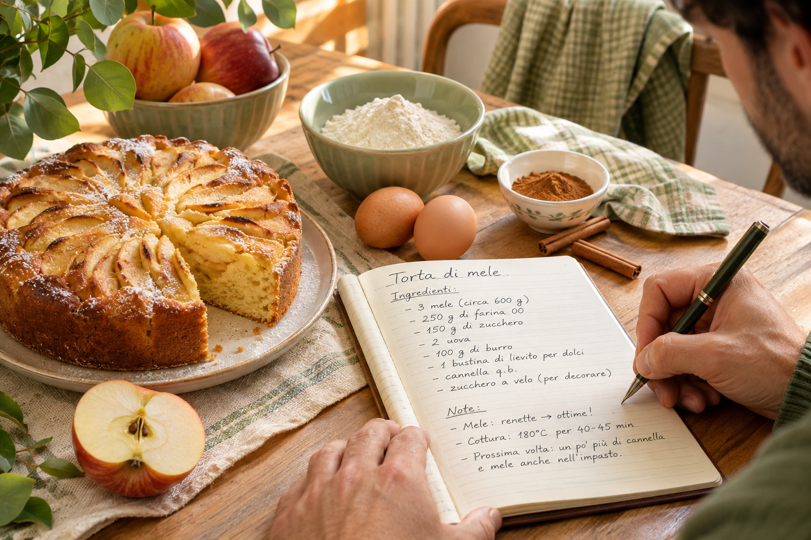

Product notes: ingredients and homemade preparations.
A small note beside the product can save a lot of guessing later.

Leo
A small note beside the product can save a lot of guessing later.

Which homemade cake was it?
Note the ingredients and a short preparation reminder: ‘Apple cake: flour, eggs, milk, apples and cinnamon. Blue recipe book, page 12.’ For a long recipe, a reference is enough. Notes are a simple reminder, not a structured recipe archive.
Who is it for?
‘For Mum’, ‘Sunday dinner’ or ‘Do not open: gift’. Notes and reminders can also hold an event date and advance alert. Add a note during purchase entry; update it through Notes and reminders in Consumption; read it in Inventory details.
Write for tomorrow’s you.
Today’s you thinks everything will be remembered! Ingredient notes do not certify the absence of allergens. Keep the original package information needed to check them.
Shall we take a closer look?
Household tips from our trio.
Like it? Start using it!
Your pantry, expiry dates and shopping list on your phone. No software installation or registration needed.